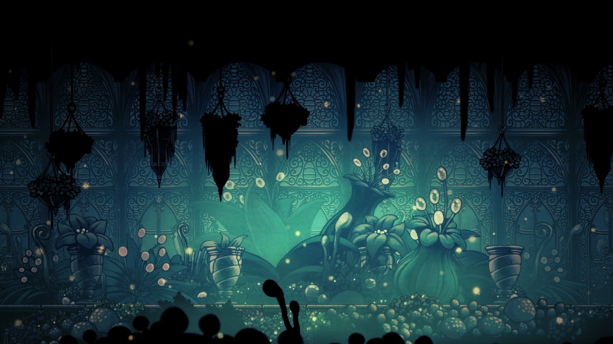
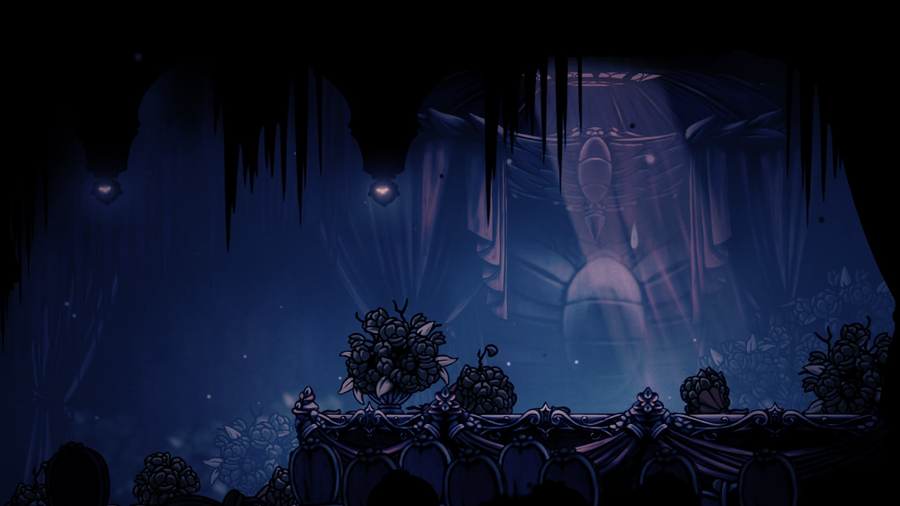

Hollow Knight

Summary
a phenomenal game, absolutetly loved it, though i do think it had some significant issues, i think those may be more due to the nature of the metroidvania game genre and not faults of Hollow Knight itself, or maybe the visuals just carried this game, who knows. this review isn't going to be particularly objective or good, and major spoilers ahead!
Design
one of the best factors of this game is the design of its world and characters, the knight (the player character) is literally the cutest and coolest looking vessel at the same time ahhhh! the hand drawn art style really makes the game stand out and maintain consistent theme. i just marvel at the all the work. instead of talking about visual works, ill just show you some of the game.




Gameplay/Flow
so i'll get into the game mechanics but first i gotta talk about the flow of the game. honestly this is not its strongest point. it leads you on a general path, but someone like me wants to explore every crevass before i move on to the next section, this causes lots of problems. first of all i frequently forgot where i was supposed to be going, since much of the world is accessable from the start. second when i combed over an area and came to the conclusion that i thoroughly searched it, i would try to continue on from there, which became a huge hastle when i missed certain things hidden away that alot of content was locked behind, e.g. the biiig dash i forget what its called, the gem one. these two factors together led to an often confusing experience, but it only got worse by the fact i didn't have some major movement boosting abilities, so i then had to spend legitimate hours to go re-check out areas looking for things to progress. though i personally had trouble with this initally, i began keeping a notebook of any major plot points or hidden details i would need to come back to later, which helped alot. i would talk about the positives of the way the game flows, but ill adress those later in other sections.
Gameplay Mechanics
it passed my number one test, is it fun to just exist as this character. mostly when you get more upgrades, but the whole time its genuinely enjoyable. not much to really say, it does a good job fleshing out a lore related system of abilities and charms that help make fights more interesting. a solid system.
Boss Fights
the boss fights have many unique ways of challenging the player, especially due to the limited moveset and lack of combos. the big downside is.... they are suuper repetitive and unnecessarily long. some of them are justified, but like the trial of the fool (which technically isnt a boss but shhh) takes about 15 mins, so if you die at the end you have to sit through the whole fight again. Which in my opinion wouldn't be bad if it was a super long trial that was suuuper hard, but its not. its easy for 12 mins then has a horrible spike. i think a section that does this right is the White Palace. it is very difficult but consistently so, which forces the player to get good enough to beat the whole thing in one go. truly a wonderful challenge. also that delicate flower mission can go die.
Lore
the story telling here is phenomenal, if not a bit pretentious sometimes, but literally amazing. there is every type of latent story telling convention known to man and they do a wonderful job. i could pour out my interpretation of the lore, but honestly i think thats best left to you to go experience.
Verdict
buy the game, its way too cheap considering how jam packed it is, even if its not your thing, its worth trying or just supporting the devs. i love the game even if i hate it sometimes.